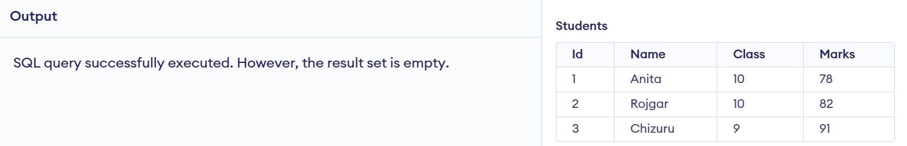
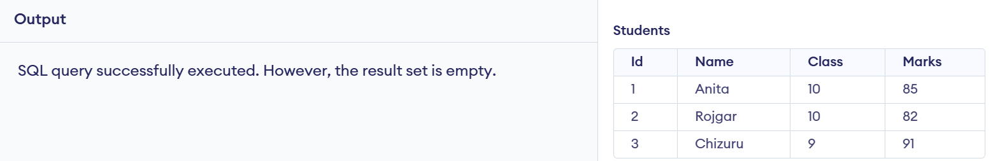
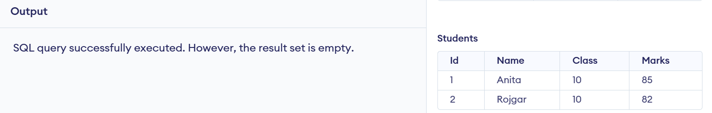

Database Management System
Data
Data refers to raw facts and figures that by themselves may not carry specific meaning. It can be numbers, characters, symbols, images, or even sounds collected through observation, measurement, or research. Examples include names, dates, sales numbers, temperatures, or sensor readings. Data on its own doesn’t provide insights — it needs to be processed or interpreted. There are various types of data:
- Qualitative vs Quantitative: Descriptive vs measurable values.
- Structured vs Unstructured: Organized in a format like tables vs unorganized like text or images.
- Primary vs Secondary: Original data collected first-hand vs data gathered from existing sources.
Proper data collection is critical for accurate analysis, decision-making, and building databases.
Information
Information is the result of processing, organizing, and structuring data to make it meaningful and useful. For example, while “75, 60, 80” are just numbers (data), stating that “The average temperature for the week is 71°F” gives context — and becomes information. Information enables decisions, supports analysis, and helps in communication. It is:
- Contextual: Related to a specific purpose or need
- Timely: Delivered when it’s needed the most
- Accurate & Relevant: Useful and reliable for the task at hand
In database systems, information is the ultimate goal of storing and manipulating data.
Features of Information
High-quality information is essential for effective decision-making, problem-solving, and communication within organizations and systems. The value of information lies in several key characteristics that ensure its usefulness and reliability:
- Accuracy: Information must be free from errors and reflect reality. Inaccurate data can lead to poor decisions and failed operations.
- Relevance: The information should be applicable and useful for the task or decision at hand. Irrelevant details distract and confuse.
- Timeliness: Up-to-date information ensures prompt and effective responses. Outdated data can mislead users and cause delays.
- Completeness: Information should include all necessary data points required to understand a situation or make a decision.
- Understandability: Information should be presented in a clear, logical, and easy-to-digest format so it can be interpreted correctly.
- Verifiability: Information must be traceable to a reliable source or confirmed by a known method of validation.
These features collectively ensure that information serves its purpose effectively in both databases and business environments.
Database and Its Purpose
Databases are used in nearly every field — from schools to businesses to apps — because they offer:
- Data Storage: Efficiently stores large volumes of data.
- Data Retrieval: Quick access to specific information using queries.
- Data Consistency: Reduces redundancy and improves accuracy.
- Multi-user Access: Allows multiple users to work with the data simultaneously.
- Security: Restricts access and protects sensitive information.
- Backup & Recovery: Helps protect against data loss.
Terminologies in Database
- Table: Collection of data in rows and columns.
- Field: A column in a table.
- Record/Tuple: A single row.
- Object: Instance of a class containing both data and methods.
- Key: Used to identify records uniquely.
Data Dictionary
A data dictionary is a centralized repository of information about data such as meaning, relationships to other data, origin, usage, and format.
Database Management System
DBMS is software that allows users to define, create, maintain, and control access to the database.
Objectives
- Efficient data management
- Integrity and security
- Concurrency and recovery
Advantages
- Reduces redundancy
- Improves data sharing
- Enables backup and recovery
Disadvantages
- High cost
- Complexity
- Need for trained staff
Types of Database Models
- Hierarchical: Parent-child relationship.
- Network: Many-to-many relationship.
- Relational: Tables linked by keys.
- Entity-Relational: Diagrammatic structure.
Integrity Constraints
- Domain: Values must be valid types.
- Entity: Each row must be unique.
- Referential: Foreign key must match primary key.
- Keys: Unique identifiers.
Normalization
Normalization is a database design technique that reduces redundancy and dependency by organizing fields and table of data.
Normal Forms
- 1NF – Atomic values
- 2NF – No partial dependency
- 3NF – No transitive dependency
Advantages
- Removes redundancy
- Improves consistency
Disadvantages
- More complex queries
Centralized vs Distributed Databases
Centralized database is located at a single location, whereas distributed database is stored across multiple sites.
| Feature | Centralized | Distributed |
|---|---|---|
| Speed | Slower | Faster |
| Cost | Low | High |
| Failure Risk | High | Low |
Database Security
Challenges
- Hacking and unauthorized access
- Internal misuse
- Loss or corruption of data
Security Measures
- Authentication and Access Control
- Encryption
- Auditing and Monitoring
Roles of DBA
- Ensuring availability and integrity
- Monitoring performance
- Controlling access
Past Year Questions & Answers (2020–2024)
What is a Database?
A database is an organized collection of structured data that can be easily accessed, managed, and updated. It allows users to store vast amounts of information efficiently and retrieve relevant details quickly using queries.
Databases are used in many fields such as banking, schools, healthcare, government, and e-commerce to handle data related to customers, employees, transactions, products, and more.
A database can store various types of data including text, numbers, dates, images, and even audio or video files. The goal of a database is not just to store data but also to make it meaningful through structure and retrieval.
What is a DBMS?
A Database Management System (DBMS) is a software tool that allows users to interact with databases. It provides an interface to create, read, update, and delete data (commonly called CRUD operations).
DBMS helps ensure data consistency, integrity, and security while offering tools to back up and restore data. It separates the data from the application logic, allowing multiple users to access the same database simultaneously in a controlled environment.
Examples of popular DBMS software include MySQL, PostgreSQL, Oracle, Microsoft SQL Server, and SQLite.
Advantages of DBMS
- Reduces Redundancy: Centralized control avoids unnecessary duplication of data.
- Data Consistency: As data is stored in one place, any changes are reflected throughout the system.
- Improved Data Security: User access and permissions can be managed to ensure only authorized access.
- Data Sharing: Multiple users can access data simultaneously in a structured way.
- Backup and Recovery: Automatic backup and recovery features help protect data against loss.
- Enforces Standards: DBMS supports data formats and naming conventions for consistency.
- Data Independence: Application and data are separated, making the system flexible and scalable.
Disadvantages of DBMS
- High Cost: Software, hardware, and staffing can be expensive to implement and maintain.
- Complexity: Requires skilled professionals to design and manage the system.
- Performance Overhead: Extra layers of management can slow down operations for very small applications.
- Risk of Data Breach: If not properly secured, centralized data becomes a target for attackers.
- System Failure Impact: If the DBMS crashes, all users may lose access until recovery is completed.
Comparison Table
| Feature | File Processing System | DBMS |
|---|---|---|
| Data Redundancy | Same data may be stored in multiple files, leading to duplication. | Centralized control reduces duplication and storage waste. |
| Data Consistency | Inconsistent data possible due to redundancy across files. | Data remains consistent with centralized updates. |
| Security | Basic file-level access control; vulnerable to unauthorized access. | Advanced security with user roles, permissions, and encryption. |
| Data Access | Programmer must manually handle file logic for access. | SQL makes data querying and manipulation easy and standardized. |
| Multi-user Access | Challenging to support; risk of conflicts or corruption. | Designed to handle multiple users with proper concurrency control. |
| Backup & Recovery | Manual process; prone to errors or data loss. | Built-in tools for automatic backup and recovery. |
1. Hierarchical Model
This model organizes data in a tree-like structure where each record (child) has one parent, but a parent can have multiple children.
Example: Departments → Employees → Projects
- Advantages: Simple and fast for one-to-many relationships, easy to navigate top-down.
- Disadvantages: Rigid structure, difficult to manage many-to-many relationships, and lacks flexibility.
2. Network Model
Data is represented as records connected by links, allowing more complex relationships like many-to-many. It uses a graph structure.
Example: A student may enroll in multiple courses, and a course may have multiple students.
- Advantages: Supports complex relationships, faster access with direct links.
- Disadvantages: Complex structure, harder to design and maintain, requires detailed knowledge of links.
3. Relational Model
Data is stored in tables (called relations) with rows and columns. Relationships are maintained using keys (primary and foreign keys).
Example: Tables like Students, Courses, and Enrollments linked by IDs.
- Advantages: Simple to understand and use, supports SQL, high flexibility, and widely used.
- Disadvantages: May become slow with very complex queries and large joins, and requires normalization to reduce redundancy.
4. Object-Oriented Model (Optional / Advanced)
Combines object-oriented programming concepts with database features. Data is stored as objects with attributes and methods.
- Advantages: Better for complex applications like CAD, multimedia, etc.; reusability of code.
- Disadvantages: Not as mature as relational model; requires object-oriented programming knowledge.
Relational Database
A relational database is a type of database that stores data in the form of tables (also called relations). Each table consists of rows (records) and columns (attributes), and tables can be linked to one another through keys like primary keys and foreign keys.
It uses a structured query language (SQL) to manage, query, and manipulate the data. The relational model is based on mathematical principles, which ensures data consistency and integrity.
Example: A table of Students with columns for ID, Name, and Class; and another table of Marks with StudentID as a foreign key.
Key Features
- Data is stored in tables (rows and columns).
- Relationships are established through keys.
- Supports operations like SELECT, INSERT, UPDATE, and DELETE using SQL.
- Allows normalization to reduce redundancy.
Difference from Other Models
| Aspect | Relational Model | Hierarchical / Network Models |
|---|---|---|
| Structure | Uses flat tables with rows and columns | Uses tree or graph structures with parent-child relationships |
| Flexibility | Highly flexible and supports ad-hoc queries | Rigid and predefined relationships |
| Data Access | Uses SQL for easy data retrieval | Requires navigation through pointers or paths |
| Relationships | Supports many-to-many via junction tables | Hierarchical supports only one-to-many; network supports many-to-many with complexity |
| Ease of Use | User-friendly; widely used in applications | More complex to design and query |
What is Data Redundancy?
Data redundancy refers to the unnecessary duplication of the same data in multiple places. It often occurs in file-based systems where each application maintains its own data files without any coordination.
For example, if a student's address is stored in both the "Student" file and the "Library" file, and the address changes in one but not the other, it results in inconsistency. Redundant data consumes extra storage and increases the chance of errors.
Problems Caused by Data Redundancy
- Inconsistency: Different versions of the same data across systems.
- Wasted Storage: Storing the same data multiple times consumes more disk space.
- Complex Updates: Every instance of data must be updated manually to stay consistent.
- Reduced Efficiency: Searching and processing duplicate data slows down the system.
How DBMS Reduces Data Redundancy
- Centralized Database: Data is stored in a single database accessible by multiple applications, eliminating duplication.
- Normalization: DBMS uses normalization techniques to break data into smaller related tables, ensuring each data item is stored only once.
- Use of Keys: Relationships are created using primary and foreign keys instead of duplicating data in multiple tables.
- Data Integrity Rules: Constraints in DBMS ensure consistency and prevent duplication at the entry level.
Centralized Database System
A centralized database system stores all data at a single physical location (such as one server or data center). All users and applications connect to this single point to access and manipulate the data.
This setup is easier to manage and maintain but may suffer from slower access for remote users and higher risk of failure if the central server goes down.
Distributed Database System
A distributed database system stores data across multiple locations (servers or sites) connected through a network. Each site manages its own data and may also share access with other sites.
This improves speed, fault tolerance, and availability, but adds complexity in synchronization, security, and system design.
Comparison Table
| Feature | Centralized Database | Distributed Database |
|---|---|---|
| Location | Data is stored in one central location | Data is stored across multiple locations |
| Data Access Speed | May be slower for remote users | Faster for local users due to data proximity |
| Failure Impact | Single point of failure risks total downtime | Failures at one site don’t affect the whole system |
| Complexity | Simpler to manage and maintain | More complex to design and coordinate |
| Cost | Lower hardware and setup cost | Higher setup and maintenance cost |
| Scalability | Limited; depends on central system capacity | Highly scalable across multiple servers |
Who is a DBA?
A Database Administrator (DBA) is a professional responsible for managing and maintaining database systems. The DBA ensures that the database is available, secure, optimized for performance, and properly backed up. They act as the bridge between the database system and users or developers.
The role requires knowledge of database design, SQL, data security, system performance, and recovery strategies.
Key Responsibilities of a DBA
- Database Installation and Setup: Installing DBMS software and setting up initial databases.
- Security Management: Controlling user access, permissions, and ensuring data confidentiality and protection.
- Backup and Recovery: Creating backup strategies and ensuring data can be restored in case of failure or loss.
- Performance Tuning: Monitoring and optimizing query execution, indexing, and system performance.
- Data Integrity: Enforcing constraints and validation rules to maintain accurate and consistent data.
- User Management: Creating, modifying, and removing database user accounts and roles.
- Database Monitoring: Continuously tracking database health, usage, and detecting potential issues.
- Data Migration: Moving data between systems or upgrading databases without loss or corruption.
- Troubleshooting: Identifying and resolving errors related to database access, queries, or system failures.
Normalization is a database design process used to reduce redundancy and dependency by organizing data into related tables. It ensures data consistency and integrity by breaking large tables into smaller, manageable ones and linking them through relationships.
The goal is to eliminate duplicate data, avoid anomalies, and improve database efficiency.
First Normal Form (1NF)
A table is in 1NF if:
- All attributes contain atomic (indivisible) values
- There are no repeating groups or arrays
Example (Before 1NF):
Student(ID, Name, Courses)
1, Aayush, Math, Science
After 1NF:
Student(ID, Name, Course)
1, Aayush, Math
1, Aayush, Science
Second Normal Form (2NF)
A table is in 2NF if:
- It is already in 1NF
- All non-key attributes are fully dependent on the entire primary key (no partial dependency)
Example (Before 2NF):
Enrollment(StudentID, CourseID, StudentName)
After 2NF:
Student(StudentID, StudentName)
Enrollment(StudentID, CourseID)
Third Normal Form (3NF)
A table is in 3NF if:
- It is already in 2NF
- There are no transitive dependencies (non-key attribute should not depend on another non-key attribute)
Example (Before 3NF):
Student(ID, Name, Department, DeptLocation)
After 3NF:
Student(ID, Name, Department)
Department(Department, DeptLocation)
A primary key is a field (or a combination of fields) that uniquely identifies each record in a table. It must contain unique values and cannot be null.
Example:
Student(ID, Name, Class)
Primary Key → IDHere, ID is the primary key because it uniquely identifies each student.
Foreign Key
A foreign key is a field in one table that refers to the primary key in another table. It establishes a relationship between two tables.
Example:
Student(ID, Name)
Enrollment(StudentID, CourseID)Here, StudentID in the Enrollment table is a foreign key that refers to ID in the Student table.
Candidate Key
A candidate key is a field (or set of fields) that can uniquely identify records in a table. A table can have multiple candidate keys, but only one is chosen as the primary key.
Example:
Employee(EmpID, Email, NationalID)
Candidate Keys → EmpID, Email, NationalIDAll three fields can uniquely identify an employee. One will be selected as the primary key (e.g., EmpID), while the others remain candidate keys.
SQL (Structured Query Language) is a standard language used to communicate with relational database systems. It allows users to define, manipulate, retrieve, and control access to data stored in databases.
SQL is used in almost every modern RDBMS, including MySQL, PostgreSQL, Oracle, SQL Server, and SQLite. It provides a simple and powerful way to interact with large volumes of structured data.
Main Components of SQL
- DDL (Data Definition Language): Used to define or modify the structure of database objects like tables, views, and indexes.
CREATE, ALTER, DROP - DML (Data Manipulation Language): Used to manipulate data inside the tables.
INSERT, UPDATE, DELETE - DCL (Data Control Language): Used to control access and permissions.
GRANT, REVOKE - TCL (Transaction Control Language): Used to manage database transactions.
COMMIT, ROLLBACK, SAVEPOINT - DQL (Data Query Language): Used to retrieve data from the database.
SELECT
Common SQL Functions
- Aggregate Functions: Perform calculations on data sets
COUNT()– Counts number of rowsSUM()– Calculates total of numeric valuesAVG()– Finds average valueMIN()/MAX()– Returns smallest/largest value
- String Functions: Used for text operations
UPPER(),LOWER(),LENGTH()
- Date Functions: Work with date/time data
NOW(),CURDATE(),DATEDIFF()
a. Create a Table Named students
CREATE TABLE students (
Id INT PRIMARY KEY,
Name VARCHAR(50),
Class VARCHAR(10),
Marks INT
);This command creates a table with four fields: ID, Name, Class, and Marks. The Id field is set as the primary key.
b. Insert Records into the students Table
INSERT INTO students (Id, Name, Class, Marks)
VALUES
(1, 'Anita', '10', 78),
(2, 'Rojgar', '10', 82),
(3, 'Chizuru', '9', 91);This adds three student records to the table with their respective IDs, names, classes, and marks.
c. Display All Records from the Table
SELECT * FROM students;This retrieves and displays all rows and columns from the students table.
d. Update the Marks of a Student Whose Name is 'Anita'
UPDATE students
SET Marks = 85
WHERE Name = 'Anita';This command updates the marks of the student named Anita to 85.
e. Delete the Record of the Student with Id = 3
DELETE FROM students
WHERE Id = 3;This deletes the record of the student whose ID is 3 (in this case, Chizuru).
A data dictionary is a repository that contains metadata—information about the structure, definitions, and rules of the data in a database. It includes details like table names, field names, data types, constraints, and relationships.
2. Primary Key
A primary key is a unique identifier for each record in a table. It ensures that no duplicate or null values exist in that column.
Example: In a Student table, the StudentID can be a primary key.
3. Relationship
A relationship defines how two or more tables are connected in a database. Relationships are established using primary and foreign keys to maintain referential integrity.
Example: A student can enroll in multiple courses, forming a one-to-many relationship.
4. DML (Data Manipulation Language)
DML is a subset of SQL used to manipulate data stored in the database.
Commands: INSERT, UPDATE, DELETE, SELECT
5. SQL (Structured Query Language)
SQL is the standard language used to manage and manipulate relational databases. It includes commands for querying, updating, and managing data structures.
6. Data Integrity
Data integrity refers to the accuracy, consistency, and reliability of data throughout its lifecycle. DBMS ensures integrity through constraints like primary keys, foreign keys, and validation rules.
7. DDL (Data Definition Language)
DDL is a subset of SQL used to define and modify database structures.
Commands: CREATE, ALTER, DROP
8. Data Security
Data security involves protecting data from unauthorized access, corruption, or theft. DBMS supports user roles, encryption, authentication, and access control to ensure security.
9. Database System
A database system consists of the database, DBMS software, users, and related applications. It provides an environment to efficiently store, access, and manage data.